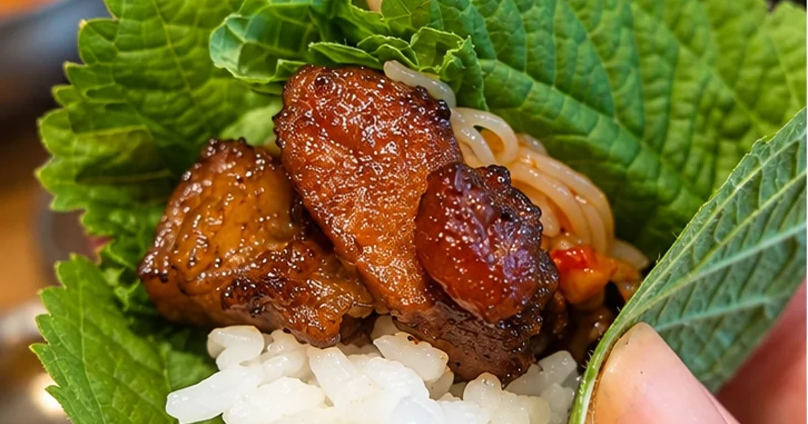

Everyday Korea
What Is Ssam? Korean BBQ Lettuce and Perilla Leaf Wraps
At Korean barbecue, diners may wrap grilled meat, rice, sauces, and side dishes in leafy greens. This eating style is called ssam, and the combination can be assembled according to personal taste.
Read story →